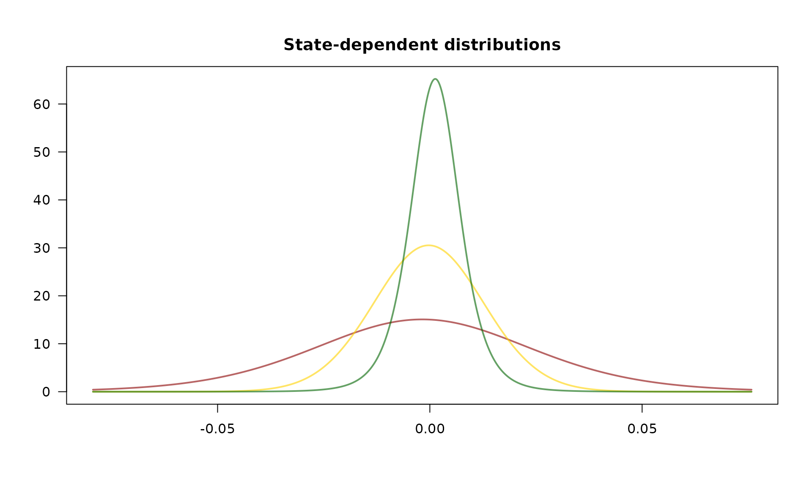
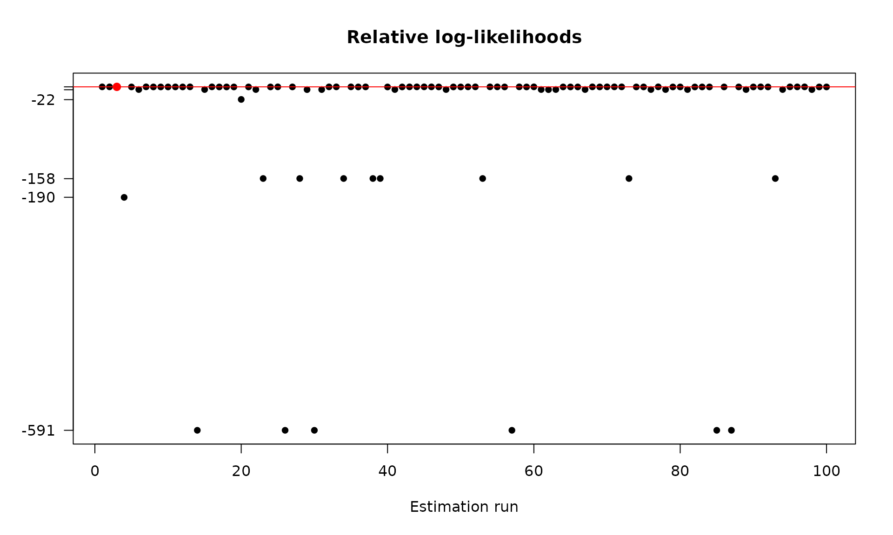

The fHMM package fits a hidden Markov model via the maximum-likelihood method, i.e. by numerically maximizing the likelihood function. This vignette1 derives the likelihood formula, discusses challenges associated with the likelihood maximization and presents the model estimation workflow.
Likelihood evaluation using the forward algorithm
Deriving the likelihood function of an hidden Markov model is part of the hierarchical case, hence the following only discusses the general case.
An HHMM can be treated as an HMM with two conditionally independent data streams; the coarse-scale observations on the one hand and the corresponding chunk of fine-scale observations connected to a fine-scale HMM on the other hand. To derive the likelihood of an HHMM, we start by computing the likelihood of each chunk of fine-scale observations being generated by each fine-scale HMM.
To fit the -th fine-scale HMM, with model parameters to the -th chunk of fine-scale observations, which is denoted by , we consider the fine-scale forward probabilities where and . Using the fine-scale forward probabilities, the fine-scale likelihoods can be obtained from the law of total probability as The forward probabilities can be calculated in a recursively as
The transition from the likelihood function of an HMM to the likelihood function of an HHMM is straightforward: Consider the coarse-scale forward probabilities where and . The likelihood function of the HHMM results as The coarse-scale forward probabilities can be calculated similarly by applying the recursive scheme
Challenges associated with the likelihood maximization
To account for parameter constraints associated with the transition probabilities (and potentially the parameters of the state-dependent distributions), we use parameter transformations. To ensure that the entries of the t.p.m.s fulfill non-negativity and the unity condition, we estimate unconstrained values for the non-diagonal entries of and derive the probabilities using the multinomial logit link rather than estimating the probabilities directly. The diagonal entries result from the unity condition as Furthermore, variances are strictly positive, which can be achieved by applying an exponential transformation to the unconstrained estimator.
When numerically maximizing the likelihood using some Newton-Raphson-type method, we often face numerical under- or overflow, which can be addressed by maximizing the logarithm of the likelihood and incorporating constants in a conducive way, see Zucchini, MacDonald, and Langrock (2016) and Oelschläger and Adam (2021) for details.
As the likelihood is maximized with respect to a relatively large number of parameters, the obtained maximum can be a local rather than the global one. To avoid this problem, it is recommended to run the maximization multiple times from different, possibly randomly selected starting points, and to choose the model that corresponds to the highest likelihood, again see Zucchini, MacDonald, and Langrock (2016) and Oelschläger and Adam (2021) for details.
Application
For illustration, we fit a 3-state HMM with state-dependent t-distributions to the DAX data that we prepared in the previous vignette on data management:
controls <- list(
states = 3,
sdds = "t",
data = list(file = system.file("extdata", "dax.csv", package = "fHMM"),
date_column = "Date",
data_column = "Close",
from = "2000-01-01",
to = "2021-12-31",
logreturns = TRUE),
fit = list("runs" = 100)
)
controls <- set_controls(controls)
data <- prepare_data(controls)The data object can be directly passed to the
fit_model() function that numerically maximizes the model’s
(log-) likelihood function runs = 100 times.2 This task can be
parallelized by setting the ncluster argument.3
dax_model_3t <- fit_model(data, seed = 1, verbose = FALSE)The estimated model is saved in the fHMM package and can be accessed as follows:
data(dax_model_3t)Calling the summary() method provides an overview of the
model fit:4
summary(dax_model_3t)
#> Summary of fHMM model
#>
#> simulated hierarchy LL AIC BIC
#> 1 FALSE FALSE 17650.02 -35270.05 -35169.85
#>
#> State-dependent distributions:
#> t()
#>
#> Estimates:
#> lb estimate ub
#> Gamma_2.1 2.754e-03 5.024e-03 9.110e-03
#> Gamma_3.1 2.808e-16 2.781e-16 2.739e-16
#> Gamma_1.2 1.006e-02 1.839e-02 3.338e-02
#> Gamma_3.2 1.514e-02 2.446e-02 3.927e-02
#> Gamma_1.3 5.596e-17 5.549e-17 5.464e-17
#> Gamma_2.3 1.196e-02 1.898e-02 2.993e-02
#> mu_1 -3.862e-03 -1.793e-03 2.754e-04
#> mu_2 -7.994e-04 -2.649e-04 2.696e-04
#> mu_3 9.642e-04 1.272e-03 1.579e-03
#> sigma_1 2.354e-02 2.586e-02 2.840e-02
#> sigma_2 1.225e-02 1.300e-02 1.380e-02
#> sigma_3 5.390e-03 5.833e-03 6.312e-03
#> df_1 5.550e+00 1.084e+01 2.116e+01
#> df_2 6.785e+00 4.866e+01 3.489e+02
#> df_3 3.973e+00 5.248e+00 6.934e+00
#>
#> States:
#> decoded
#> 1 2 3
#> 704 2926 2252
#>
#> Residuals:
#> Min. 1st Qu. Median Mean 3rd Qu. Max.
#> -3.517900 -0.664018 0.012170 -0.003262 0.673180 3.693568The estimated state-dependent distributions can be plotted as follows:
plot(dax_model_3t, plot_type = "sdds")
As mentioned above, the HMM likelihood function is prone to local optima. This effect can be visualized by plotting the log-likelihood value in the different optimization runs, where the best run is marked in red:
plot(dax_model_3t, plot_type = "ll")